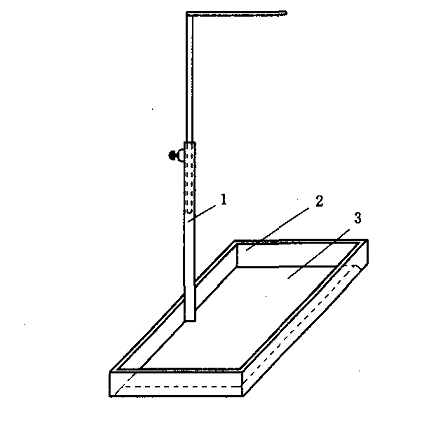
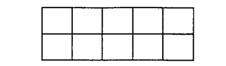
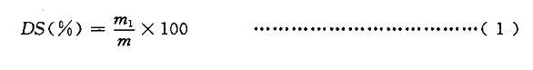

立足客户，精益求精，诚实守信，互利共赢
MT/T925-2004 工业型煤落下强度测定方法
- 【颁布单位】：国家发展和改革委员会
- 【发文号】MT/T925-2004
- 【颁布日期】：2004-12-14
- 【实施日期】2005-06-01
工业型煤落下强度测定方法:
- 1、 范围
本标准规定了工业型煤落下强度测定用的仪器设备、型煤试样、测定步骤、结果表达和方法精密度。
本标准适用于各种工业型煤。
- 2、 规范性引用文件
下列文件中的条款通过本标准的引用而成为本标准的条款。凡是注日期的引用文件，其随后所有的修改单(不包括勘误的内容)或修订版均不适用于本标准，然而，鼓励根据本标准达成协议的各方研究是否可使用这些文件的最新版本。凡是不注日期的引用文件，其最新版本适用于本标准
MT/T915 工业型煤样品采取方法
MT/T916 工业型煤样品制备方法
- 3、 方法提要
一定量的型煤样品，从2m高处自由落下到规定厚度的钢板上。将落下的型煤中粒度大于13mm的型煤块再次落下，共落下3次，以第3次落下后粒度大于13mm的型煤块质量占原型煤试样质量的百分数，表示型煤的落下强度。
- 4、 仪器设备
4.1天平:感量1g,
4.2 圆孔筛:孔径 13mm,
4.3试验架:如图1所示。钢板厚度不小于15mm，长约1200mm,宽约900mm。四周挡板高约200mm。最好有一边活动，以便于清扫。标记杆可调。(如下图：试验架示意图)
试验架示意图
1— 标记杆 ;
2— 挡板;
3— 钢板。
- 5、 型煤试样的采取和制备
按照MT/T915的规定采取型煤样品，再按照MT/T916的规定用长带法缩分出6kg型煤样品，其中外形基本完整、无裂纹的不少于60个，使样品达到空气干燥状态，剔除其中不完整、有裂纹的型煤后，将剩余的型煤样品按图2划分为10个面积相等的小块。从每个小块中随机取出一个型煤共10个作为一份试样，用同样方法再取10个作为另一份试样(如下图：取样示惫图)
取样示惫图
- 6、 侧定步娜
称量1份试样的质量，称准到1g。将试样从试验架2m高处逐个自由落下到钢板上，落下后筛出粒度大于13mm的型煤块，按同样方法落下并筛分3次。每个型煤落下后应将落下位置清扫干净，再进行下一个型煤的落下试验。称量第3次筛分后粒度大于13mm的型煤块的质量，称准到1g, 结果计算。
- 7、 型煤的落下强度按式(1)计算:

式中: DS— 落下强度;
m 1—试验后粒度大于13mm的型煤块质量，单位为克(g);
m—试样质盆，单位为克(g),
计算结果修约到小数后两位。以重复测定结果的算术平均值，修约到小数后一位报出。
方法精密度
2次重复试验结果的差值不超过平均值的10%。